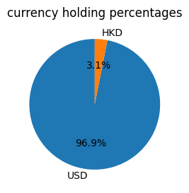
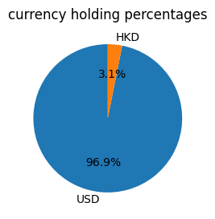
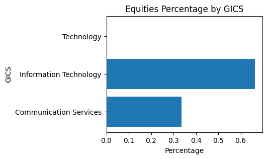
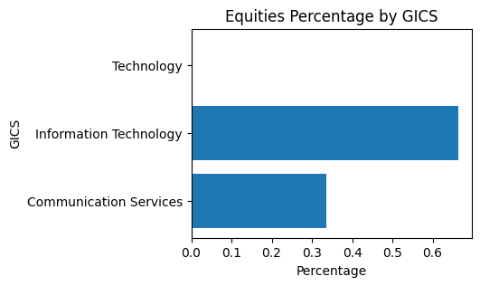

总结
这是对您的投资组合的分析，旨在概述当前持有量和历史表现。
如果您的持仓占总价值的 1% 以下，则不会出现在下图中。但 is 仍会出现在图表中，以提供有关持有的详细信息。
现金和证券
 

| 类别 | 上个月占比 | 本月占比 | 差别 |
|---|---|---|---|
| {{ item["categories"] }} | {{ item['last month'] }} | {{ item['current'] }} | {{ item['difference'] }} |
| 资产 | 占比 | 总回报(1m) | 最大回撤(1m) | 波动率(1m) | 总回报(3m) | 最大回撤(3m) | 波动率(3m) | 总回报(6m) | 最大回撤(6m) | 波动率(6m) |
|---|---|---|---|---|---|---|---|---|---|---|
| {{ item["instrument"] }} | {{ item["percentage"] }} | {{ item['gross_return(1m)'] }} | {{ item['max drawdown(1m)'] }} | {{ item['volatility(1m)'] }} | {{ item['gross_return(3m)'] }} | {{ item['max drawdown(3m)'] }} | {{ item['volatility(3m)'] }} | {{ item['gross_return(6m)'] }} | {{ item['max drawdown(6m)'] }} | {{ item['volatility(6m)'] }} |
市场风险

| 资产 | 占比 | VaR | CVaR | 风险占比 |
|---|---|---|---|---|
| {{ item["instrument"] }} | {{ item["percentage"] }} | {{ item['VaR'] }} | {{ item['CVaR'] }} | {{ item['risk_contribution'] }} |
The risk level of you is {{risk_level}}
流动性风险
| 资产 | 平均每日持有量 | 持有 | 持有/平均每日持有量 |
|---|---|---|---|
| {{ item["instrument"] }} | {{ item["ADTV"] }} | {{ item['Holding'] }} | {{ item['Holding/ADTV'] }} |
集中性风险
 

{{ concentration_risk }}
相关性和尾部风险

{{ correlation_risk }}
风险披露
本报告可帮助您更好地了解您在 AFE-N2N 和您可能与我们分享的其他金融机构持有的投资组合中的风险。本报告介绍了投资组合特征，以及投资组合波动率的估计值和压力测试结果。该报告通过分析您投资组合中的头寸来估计波动性。通常，波动性越高，证券或投资组合的风险就越大。压力测试可用于说明您的投资组合在特定市场情景或一组事件下可能如何反应。
合适性基准的目的是帮助您根据所陈述的风险状况了解本报告中引用的投资组合中的风险。适宜性基准可能与用于比较投资组合表现的基准不同。
该报告允许您查看和比较您当前投资组合的风险分析结果与合适性基准和假设的替代投资组合（如有描述），您可能拥有或可能不拥有或可能不拥有相同数量的头寸。如果本报告中描述的替代投资组合，包括替代投资组合中的资产配置和特定证券，则仅为假设说明。
AFE-N2N 不建议您采用本报告或其任何组成部分中显示的假设替代投资组合。相反，我们呈现它是为了让您在考虑当前持有的风险特征时有一个比较的基础。在与您讨论本报告中的分析以及您承担风险的能力和意愿后，您的财务顾问可以与您一起构建满足您需求的投资组合。
本报告中针对您当前投资组合和/或替代投资组合的假设结果不是也不应被解释为对未来表现的保证。用于生成这些结果的因子模型可能包含错误或错误的假设。
请参阅本报告末尾的重要披露和词汇表，了解更多信息，包括对贯穿始终的假设和方法的描述以及关键术语的定义。